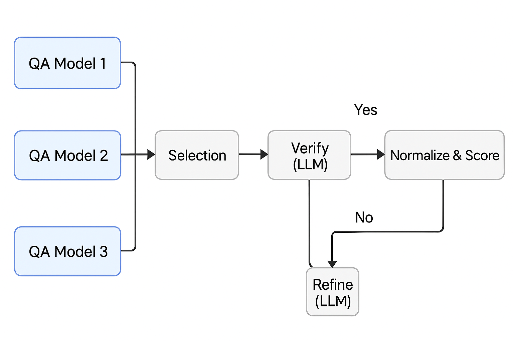
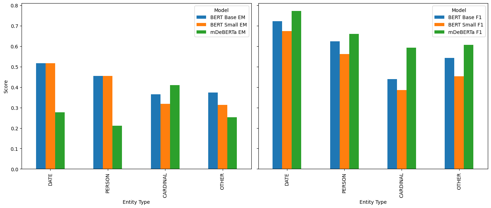
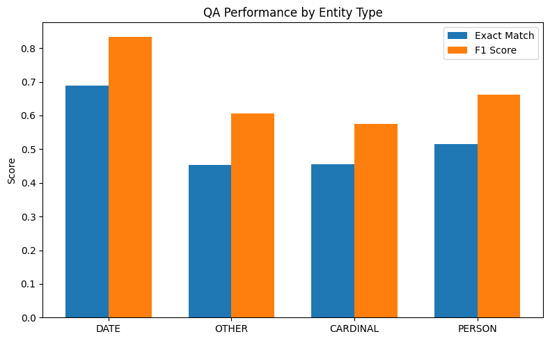
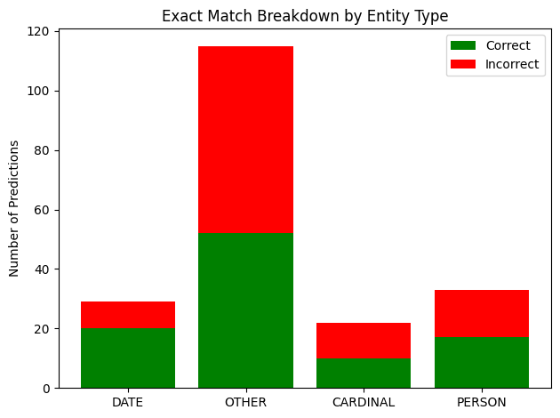
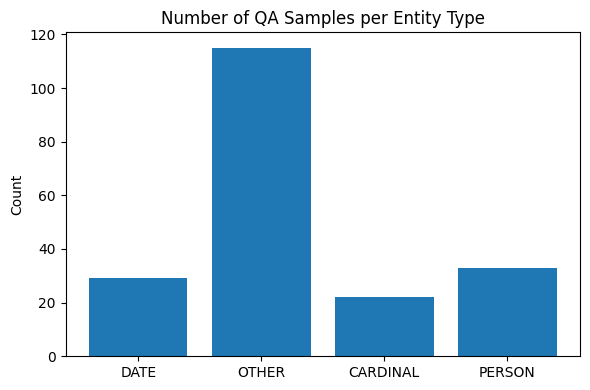
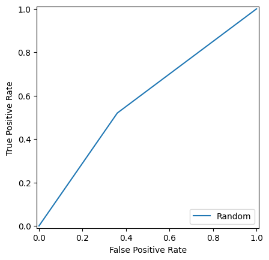
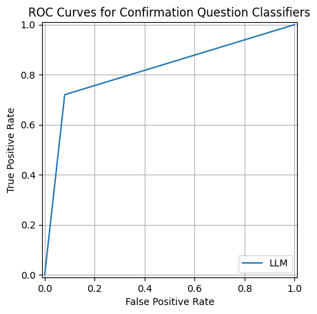

Question Answering System with BERT, LLMs & Passage Retrieval
Brief
Designed and evaluated a complete Question Answering pipeline over a corpus of Wikipedia-derived documents. The system handles two question types — factoid (extract a specific span from text) and confirmation (yes/no) — and routes each question automatically to the appropriate back-end. The core of the project is a systematic comparison of four Hugging Face transformer models on span extraction, scored with Exact Match and token-level F1, complemented by entity-level error analysis, an ensemble-and-LLM refinement stage, and a passage retrieval module benchmarking BM25 against dense semantic search.
The Problem
Building a QA system that works reliably over heterogeneous text requires more than just loading a pretrained model. Different question types demand different strategies, model choice significantly affects both accuracy and latency, and aggregate metrics alone hide important failure modes. This project explores those trade-offs end to end: from question routing and model benchmarking, through entity-level diagnostics, to LLM-assisted answer refinement and open-domain retrieval.
Pipeline Architecture
Every incoming question passes through a two-stage classifier before reaching a QA back-end. A question-type classifier decides whether to route to the extractive (factoid) or generative (confirmation) pipeline. For factoid questions, a second entity-type classifier tags the expected answer as DATE, PERSON, CARDINAL, or OTHER — enabling fine-grained error analysis downstream. Both classifiers use sentence embeddings from multi-qa-MiniLM-L6-cos-v1 with a Logistic Regression head.

The ensemble branch (right side of the pipeline) runs three BERT-family models in parallel, selects the highest-confidence span, then asks Flan-T5 to verify and, if needed, regenerate a better answer.
Dataset
The corpus contains Wikipedia-style topic documents, each paired with annotated questions and gold answers. Questions carry a type label (factoid / confirmation) and, for factoid items, a named-entity tag for the expected answer. The evaluation set comprises 199 factoid questions and 50 confirmation questions drawn from 30+ topics spanning sport, film, science, and history.
Question & Entity Classification
Beyond the supervised Logistic Regression classifiers, Flan-T5-Large was evaluated zero-shot on the entity tagging task — prompted with the question and context and asked to output one of PERSON, DATE, CARDINAL, or OTHER. The results are strong enough to replace a trained classifier in a lightweight deployment:
| Entity Type | Questions (n) | LLM Accuracy |
|---|---|---|
| DATE | 29 | 1.000 |
| CARDINAL | 22 | 0.955 |
| OTHER | 115 | 0.939 |
| PERSON | 33 | 0.727 |
DATE entities (e.g. "In what year was the treaty signed?") are classified perfectly — they form a compact, lexically distinctive class. PERSON is where the model occasionally confuses the category with role descriptions or organisation names.
Factoid QA — Model Benchmarking
Four extractive QA models from Hugging Face were run over the 199 factoid questions. Each model reads the full document context and predicts a text span as the answer. Evaluation follows the SQuAD convention: Exact Match (EM) is 1 only when the normalised prediction matches the gold answer character-for-character; token F1 rewards partial word overlap and is less sensitive to boundary errors.
Example — DATE question
Q: When was the first Formula One World Championship held?
Gold answer: 1950
DistilBERT prediction: 1950 → EM = 1, F1 = 1.0 ✓
mDeBERTa prediction: the 1950 Formula One season → EM = 0, F1 = 0.5 (correct token, wrong boundary)
This boundary issue is systematic in mDeBERTa and explains the large gap between its EM and F1 scores across entity types.
| Model | Overall EM | Overall F1 | Inference time (s) |
|---|---|---|---|
| distilbert-base-cased-distilled-squad | 0.427 | 0.566 | 262.7 |
| deepset/bert-base-cased-squad2 | 0.407 | 0.556 | 411.6 |
| mrm8488/bert-small-finetuned-squadv2 | 0.367 | 0.479 | 85.3 |
| timpal0l/mdeberta-v3-base-squad2 | 0.266 | 0.450 | 712.9 |
DistilBERT achieves the highest EM (42.7%) and F1 (56.6%) at a competitive inference cost. mDeBERTa-v3 scores the lowest EM (26.6%) despite a reasonable F1 (45.0%) — the gap is consistent with the boundary-misalignment pattern illustrated above. BERT Small is the fastest option (85 s on 199 questions) with a predictable accuracy trade-off.
Entity-Level Error Analysis
Aggregating by entity category exposes where each model is strong and where it breaks down. The pattern is consistent: DATE questions are easiest, CARDINAL and OTHER are the hardest targets for exact-string matching.
| Entity | n | DistilBERT EM / F1 | BERT Base EM / F1 | BERT Small EM / F1 | mDeBERTa EM / F1 |
|---|---|---|---|---|---|
| DATE | 29 | 0.621 / 0.795 | 0.517 / 0.722 | 0.517 / 0.673 | 0.276 / 0.771 |
| PERSON | 33 | 0.485 / 0.606 | 0.455 / 0.623 | 0.455 / 0.561 | 0.212 / 0.659 |
| CARDINAL | 22 | 0.409 / 0.451 | 0.364 / 0.439 | 0.318 / 0.386 | 0.409 / 0.592 |
| OTHER | 115 | 0.365 / 0.519 | 0.374 / 0.542 | 0.313 / 0.452 | 0.252 / 0.606 |
The mDeBERTa DATE row is especially telling: 27.6% EM but 77.1% F1. The model is correctly identifying the right part of the text but including surrounding words in its span — a fixable post-processing issue rather than a deep semantic failure.

Exact Match (left panel) and token F1 (right panel) per entity type for BERT Base, BERT Small, and mDeBERTa-v3. DATE is consistently the easiest category; mDeBERTa's F1 advantage over its own EM reflects span-boundary misalignment.

EM and F1 by entity type for the best-performing extractive model (DistilBERT).

Stacked bar: correct (EM = 1, green) vs. incorrect (EM = 0, red) predictions per entity category. OTHER dominates the error budget simply due to its size (n = 115).

Distribution of factoid questions across entity categories. OTHER (n = 115) makes up 58% of the set — its lower EM partly reflects the diversity of answer types within this catch-all class.
Ensemble + LLM Refinement
A more sophisticated factoid pipeline was tested alongside the single-model approach. Three BERT-family models vote on span candidates, and Flan-T5-Large acts as an independent verifier — and, when it disagrees, as a generative fallback:
- Ensemble vote: RoBERTa-base-SQuAD2, DistilBERT-uncased, and BERT-large-WWM-SQuAD each predict a span. The candidate with the highest confidence score advances.
- LLM verification: Flan-T5 is shown the question, the candidate, and the full context and asked: "Is [candidate] correct? Answer Yes or No."
- LLM refinement: if the verdict is No, Flan-T5 generates a new answer directly from context.
The following cases from the evaluation log illustrate the two key failure modes the refinement stage is designed to fix:
Case 1 — Confident majority, wrong answer
Q: Who is the seven-times champion?
Ensemble candidate: "Michael Schumacher" (highest score across models)
Flan-T5 verdict: No → Refined to "Lewis Hamilton"
EM = 1, F1 = 1.0 ✓
Case 2 — All three models agree, all three are wrong
Q: Where does the movie start?
All models: "Cannes Film Festival"
Flan-T5 verdict: No → Refined to "San Pedro Bay"
EM = 1, F1 = 1.0 ✓
In both cases the extractive models latch onto a plausible-sounding surface form that appears in the document but does not answer the specific question. The LLM verifier, which reads the full context, catches the mismatch and generates the correct answer — recovering cases that are otherwise unrecoverable by voting alone.
Confirmation (Yes / No) QA
Confirmation questions require the system to decide whether a factual claim is true given the document. Three approaches with very different assumptions were compared:
- Random baseline — coin-flip; establishes the lower bound.
- NLI entailment —
cross-encoder/qnli-distilroberta-basescores whether the context entails the question; a score above 0.5 predicts "yes". - LLM prompting — Flan-T5-Large is shown the full context and asked directly: "Answer with Yes or No."
Example — Confirmation question
Q: Was the film selected as the Greek entry for the Academy Award for Best International Feature Film?
Gold answer: Yes
NLI entailment: No (model treats the question as a non-entailment relationship) ✗
Flan-T5 LLM: Yes ✓
| Approach | Model | Accuracy | AUC |
|---|---|---|---|
| Random baseline | — | 0.580 | 0.580 |
| NLI entailment | cross-encoder/qnli-distilroberta-base | 0.500 | 0.500 |
| LLM prompting | google/flan-t5-large | 0.820 | 0.820 |
LLM prompting reaches 82% accuracy — a 24-point gain over random and 32 points over the NLI model. The NLI score of 50% (no better than chance) is a concrete finding: QNLI models learn to recognise whether a sentence is a plausible answer to a question, not whether a factual claim is true. Applying them to yes/no factual QA is a category mismatch, and the results confirm it.

ROC curves for the Random baseline (left) and NLI Entailment model (right). Both hug the diagonal — neither approach does better than chance at ranking positive examples.

ROC curve for Flan-T5 LLM prompting. The sharp early rise reflects high true-positive rate at low false-positive rate — the LLM discriminates reliably.
Passage Retrieval
The retrieval module addresses the open-domain setting: the document to read is not given, so the system must find it first. Two strategies were implemented and evaluated at Top-1, Top-3, and Top-5 retrieval accuracy over the factoid question set:
- BM25 (via
rank-bm25) — sparse lexical retrieval based on term frequency and inverse document frequency. Reliable when the question and document share exact wording. - Dense retrieval — the same
multi-qa-MiniLM-L6-cos-v1model used for classification encodes all documents and queries into a shared semantic space; retrieval is cosine nearest-neighbour search. Handles paraphrasing and vocabulary mismatch.
After retrieval, Flan-T5 answers from the top-1 retrieved passage, making this a complete retrieval-augmented generation (RAG) pipeline. BM25 tends to be faster but fails when the question uses different phrasing from the document; dense retrieval is more robust to vocabulary gaps at higher computational cost.
Implementation
- Python — full pipeline
- Hugging Face Transformers — extractive QA models (DistilBERT, BERT, mDeBERTa), Flan-T5-Large generation, QNLI cross-encoder
- SentenceTransformers — question/entity classification embeddings; dense passage retrieval
- rank-bm25 — BM25 sparse retrieval index
- scikit-learn — Logistic Regression classifiers, ROC/AUC evaluation
- NumPy / Pandas / Matplotlib — data handling, metrics, visualisation
Key Findings
- DistilBERT is the best overall extractive model on this corpus: highest EM (42.7%) and F1 (56.6%) with reasonable latency. BERT Small is the fastest option when throughput matters more than peak accuracy.
- mDeBERTa's EM/F1 gap is a span-boundary problem, not a semantic one. The model consistently selects correct content but returns over-inclusive spans (e.g., "the 1950 Formula One season" instead of "1950"). A span-trimming post-process would likely recover significant EM without retraining.
- DATE questions are the easiest target for all extractive models — compact, unambiguous strings are straightforward to delimit. CARDINAL and OTHER (which spans organisations, concepts, and locations) are consistently hardest.
- LLM prompting is the only approach that works for yes/no QA. NLI entailment (50%, no better than random) is unsuitable for factual confirmation; Flan-T5 LLM prompting achieves 82% with no fine-tuning.
- Flan-T5 is a capable zero-shot entity classifier. Near-perfect on DATE and CARDINAL (≥95%), it could replace a trained classifier in production without labelled entity data.
- Ensemble + LLM refinement recovers confident BERT errors. The cases where all three extractive models agree on a wrong answer — normally unrecoverable by voting — are successfully corrected by the Flan-T5 verifier reading the full context.